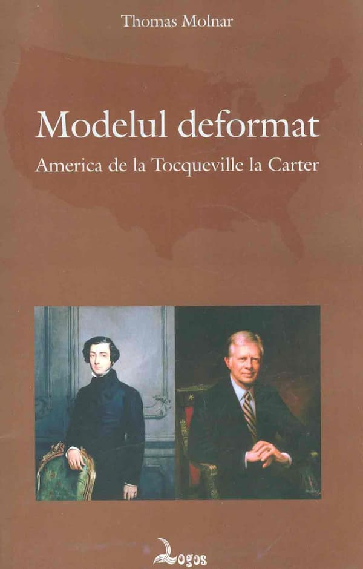

O lucrare de un interes deosebit – pentru toți cei care doresc să afle mecanismele democrației americane și extinderea lor globală – este Modelul deformat. America de la Tocqueville la Carter, apărută la editura Logos, în 2016, în traducerea lui Manuel Valeriu. Autorul este Thomas Molnar, unul dintre gânditorii care fac parte din elita intelectuală și morală a secolului XX; faptul de a face parte și din elita morală trebuie subliniat, pentru că, din păcate, foarte mulți gânditori nu stau deloc bine la acest capitol, oferind imaginea unei vieți schizofrenice.
De mare actualitate, ca și când ar fi fost scrisă pentru ziua de azi, în vederea celei de mâine, cartea este scrisă într-un limbaj accesibil și oferă înainte de toate un punct arhimedic din perspectiva căruia putem evalua orice model social-politic: respectul pentru deplinătatea umană, miezul ei fiind dat de spiritualitate. Manuel Valeriu, care a avut numeroase conversații cu autorul, traducându-i și lucrarea Eu, Simah, prefectul Romei; Omul și mașina, apărută tot la editura Logos în 2013, afirmă despre Modelul deformat: „Bine primită la apariție de intelectualii încă onești ai epocii, dar cu ostilitate de adoratorii corectitudinii politice, cartea aceasta ne ajută să înțelegem mai bine nu doar problematica americană, ci și realitatea românească și europeană dintr-o lume tot mai despiritualizatăˮ.
Spre deosebire de alte lucrări pe această temă, demersul lui Thomas Molnar are avantajul anvergurii intelectuale și culturale, al profunzimii intuiției politice și sociologice, al experienței de viață în societatea americană, dar și al criticii echilibrate de mâhnirea că o superputere își erodează viitorul în timp ce afișează o atitudine triumfalistă.
Originalul ce a stat la baza traducerii a fost publicat în anul 1978, în limba franceză, plecând de la analiza lui Alexis de Tocqueville despre societatea americană, cu scopul de a înțelege cauzele evoluției tot mai accentuate a democrației americane – prezentată ca etalon de mulți politologi – spre uniformizare și corectitudine politică, fețe ale aceleiași monede. Thomas Molnar a cunoscut din interior societatea americană și mediul universitar (din care a făcut parte), fiind profund decepționat de perpetuarea în toate domeniile și până la cele mai inofensive aspecte, a unui nivel mediu dincolo de care personalitățile cu spirit critic și creativ sunt percepute drept cazuri tolerate, o atitudine împărtășită instinctiv de cetățenii americani. Aceste aspecte uimitoare pentru un european, dar și pentru orice persoană liberă, au fost consemnate și de Tocqueville în urmă cu aproape 200 de ani.
În rândurile de mai jos vom aminti doar câteva dintre pistele de urmărit în cartea lui Thomas Molnar, consecințele problemelor abordate fiind vizibile în toată lumea.
Corectitudinea politică este un pat al lui Procust, o formulă pe care chiar noi înșine o perpetuăm din lipsă de discernământ, pe fondul conformismului consumerist. Modelul deformat devine astfel modelul deformant. Germenii acestor tare se găsesc încă de la început în modelul democratic: însăși suveranitatea populară duce la existența grupurilor de presiune, pentru că, e clar, nu toți pot conduce; când statul e adus deliberat la o stare de slăbiciune, afirmă Tocqueville, exaltarea societății civile devine agitație monotonă; sistemul deciziilor luate de majoritate descurajează apariția oamenilor de anvergură; sterilitatea intelectuală într-o lume axată doar pe afaceri – omul nu e niciodată invitat să se detașeze de pragmatic, de unde rezultă conformism moral, spiritual, cultural, pe scurt, mediocritate.
După anul 1968 este înlocuit un conformism cu altul: înainte sintagma dominantă era „ordine și securitateˮ, acum obsesia se oprește asupra aventurii simțurilor, urmează era petrecerii planetare. Stilul democratic mai degrabă va degrada oamenii decât să-i facă să sufere. La pierderea simțului critic contribuie chipul dublu al lui Big Brother: guvernul și societatea totodată: „Nu există o poliție secretă etc. care să vegheze la conformare, dar cel care nu procedează ca și ceilalți se găsește într-o situație delicată în raport cu întreaga societate și cu fiecare dintre membrii ei. El ar simți asta la fiecare pas. L-ar face să simtă asta fata care servește la cafenea, stewardesa, camarazii, prietena, învățătoarea, vânzătorul de la magazin, membrii Asociației de părinți, agentul de poliție, într-un cuvânt cineva care e nimeni dar e toată lumea, un cineva anonim dat omniprezent, întotdeauna, un cineva încă de la început interiorizat ca o a doua natură. După modelul ideologiei marxiste, care dorește un conformism tot mai pronunțat, ideal care își trage dinamismul din faptul că niciodată nu poate fi îndeplinit în întregime, ideologia americană solicită, e drept că mult mai amabil, ca în fiecare zi să fii un mai bun american, un mai bun democrat, un mai bun consumator, un mai bun participant la marile evenimente publice, chiar și atunci când e vorba de surâsul obligatoriu sau de condamnarea lui Richard Nixon în afacerea Watergateˮ (p. 124).
Explozia tehnologică a dus la uzura controlată a produselor, astfel că risipa sistematică devine o constantă a socității nord americane încă din vremea consemnărilor lui Tocqueville (1831). De aici dezastrul ecologic pe continentul american și peste tot unde sunt resurse de… luat.
Imigrația a adus reprezentanții tuturor popoarelor în SUA, iar războaiele i-a trimis într-un fel de cruciadă și re-conchistă democratică. Exemplul elocvent după Primul Război Mondial este înființarea Ligii Națiunilor în Europa, pe baza celor 14 puncte ale președintelui american Woodrow Wilson, o afectare gravă a echilibrului tradițional de putere pe continentul european, care a creat derută și a permis ascensiunea nazistă. Doar Germania juca după vechile reguli, în același timp folosindu-se din plin de principiile Ligii. O afirmă și alți teoreticieni ai relațiilor internaționale, printre care Hans Morgenthau, în Politica între națiuni. Lupta pentru putere și lupta pentru pace, și Henry Kissinger în Diplomația.
Din păcate, neliniștea identității fragile a SUA este exportată peste tot și creează o civilizație iritată, o combinație curioasă de rutină și rebeliune, în stilul New Age. De asemenea, e îngrijorător că o mare putere formată din elemente disparate înțelege puțin sau deloc motivele naționalismului și identității altor popoare. Sacralizarea formulei americane, a modului de viață american și stabilirea unui nivel unic, deci uniformitatea la toate nivelurile vieții cotidiene, au dus la o negare a celuilalt. Diversitatea este doar aparentă și superficială; diferitul este considerat o aberație amuzantă sau dăunătoare, excepția de la numitorul comun care e tolerată, dar ca un corp străin ce trebuie asimilat, redus între marginile calapodului preexistent. În acest sens este impresionant comentariul făcut de un reprezentant al presei cu prilejul vizitei lui Soljenițân în SUA, mai întâi fiind comparat cu un șaman (o comparație la îndemână pentru un american) și apoi etichetat drept un ins care provine dintr-o cultură pe care americanii o consideră înapoiată. Apreciere având rolul de a-i liniști pe cetățenii americani, care trebuie să fie convinși de faptul că fenomenul moral și cultural Soljenițân le este inferior.
De aceea, personalitățile strălucite se comportă în public asemenea omului obișnuit, pentru a nu fi izolați ori neluați în serios. Vidul creat în suflete de o identitate amorfă, susține Thomas Molnar, închide oamenii într-o cușcă psihologică și culturală. Deseori, cetățenii suportă impactul amoralismului ambiant, așa cum reiese din exemplele extrase din domeniul justiției, jurații fiind reprezentanți și promotori ai acestei atmosfere morale.
Referitor la scena politică, autorul afirmă că dezbaterea dintre liberali și conservatori este de fapt una falsă, pentru că ambele părți îi neagă statului un rol important în viața națiunii. În spatele scenei, presiunea asupra statului din partea grupurilor de presiune crește gustul pentru acțiuni secrete.
Pe plan extern se oglindește utopia din interiorul SUA: o comunitate internațională ce neagă toate particularitățile chiar în timp ce pare să le încurajeze. Singurul defect al utopiilor este însă acela că ele pot deveni programe de inginerie socială și că pot fi impuse. De-a lungul timpului, ideologia SUA a exportat direct sau subtil multe otrăvuri în care a avut grijă să picure suficientă miere astfel încât să poată fi înghițite: nonintervenționism, pace globală, moralitate politică internațională, societate globală fără națiuni, condamnarea războiului și a spionajului ca mijloace ale relațiilor internaționale, corectitudine politică, pluralism, drepturile omului, lupta împotriva terorismului etc. Toate acestea derutează pentru că sunt instrumente folosite cu abilitate de către creatorii lor, producând stupoare printre observatori și cei care le cad victime.
Ideologia americană a ajuns să fie reprezentată cel mai bine de refrenul cunoscutei piese „My wayˮ a lui Frank Sinatra și de versurile piesei lui John Lenon, „Imagineˮ. Problema absolutizării propriei căi este aceea că nimic veritabil nu mai este luat în serios atunci când toți se ghidează după acest slogan – ca în cazul like-urilor pe facebook, care se dau cu milioanele zilnic pentru lucruri foarte diferite și de calități foarte variate. „My wayˮ duce la însingurarea în felul propriu de a fi și tocmai această atitudine devine nota dominantă a unei civilizații. Cum să fii împlinit dacă rămâi blocat în proiectul lui „My wayˮ? Referitor la celălalt cântec, de remarcat faptul că el este un îndemn: „Imaginează-țiˮ, iar asta ține de zelul misionar și de visul primilor americani. Doar că acum, după îndemn, conținutul e următorul: nicio religie (sau faptul că sunt toate la fel e totuna), nicio proprietate, deci și nicio graniță etc. Sintetic, aceasta este în formulă artistic-muzicală modernă definiția globalizării: „calea meaˮ sau eu și numai eu, nicio religie sau oricare, nicio avere, adică egali în nimicul pe care-l avem (sau care ne are), nicio țară, nimic pentru care să mori…
Reducționismul american este un alt pat al lui Procust. Calitatea este redusă la cantitate, creația la comercializare, originalitatea la inventivitate, geniul la socializare, într-un cuvânt, totul este transformat în produs. Acest reducționism înseamnă și o luptă subtilă dar foarte apăsătoare împotriva elitelor, având câteva efecte grave: nihilismul american, care se manifestă prin respingerea nu doar a societății americane, ci a oricărei societăți (a se vedea biografia mai multor scriitori de pe Tărâmul Făgăduinței). O altă manifestare a nihilismului este orientarea spre fantastic și grotesc: secte, guru, droguri, megashouri etc. Un alt efect al „retezării vârfurilorˮ este apariția elitelor invizibile ce se ascund după „binele comunˮ. Lamentarea actorului Robert Redford devine de înțeles când ceea ce ai este doar „visul americanˮ: „Înainte ne simțeam în siguranță… Apoi, a venit asasinarea lui Kennedy, șocul. Continuam… fără a mai ști unde era adevărul. Războiul din Vietnam… Nu mai știam dacă avem dreptate, dacă am avut vreodată dreptate… Nimic nu e mai îngrozitor ca faptul de a nu păși pe pământ ferm… De la moartea lui Kennedy nu mai putem să ne identificăm cu cineva, fiecare își caută drumul într-o neliniște rațională. Totul e atât de tulbure, va mai trece timp până ce se va găsi o nouă formulă. Visul american a devenit un coșmar… Poate că noi căutăm un tată…ˮ (p. 126).
Temerile enumerate în citatul de mai sus sunt legate cu siguranță de lipsa reperelor, o problemă „atavicăˮ în societatea americană: dacă în Europa orașele și localitățile în general s-au ridicat în jurul unei clopotnițe, a unei biserici sau primării, în SUA ele erau doar loc de trecere – o stradă cu două infinituri (unul înainte și altul înapoi), biroul șerifului, poșta și barul. Marile orașe de astăzi din SUA păstrează ceva din această organizare a spațiului; cele mai importante clădiri sunt cele comerciale, mall-urile, băncile, clădirile bursei.
Conformismul este doar o urmare a lipsei reperelor puternice. Tocqueville însuși a observat uniformitatea monotonă, însoțită de agitația ce încearcă să o depășească (sau să o mascheze), fără să poată aduce cu adevărat ceva nou. La început, conformismul a avut ca principală sursă societatea atotputernică, apoi creșterea accentuată a rolului președintelui, iar în prezent, o atotputernică birocrație care înghite orice personalitate. Poate de aceea ideologiile comunistă și americană seamănă foarte mult:
„(…) descoperim [în discursul din 1976 al doamnei Barbara Jordan, membră de culoare a Congresului, n.n.] nesiguranța americanilor de a fi americani, visul niciodată atins, promisiunea mereu amânată. Utopismul răzbate în fiecare frază: căutare permanentă a unei națiuni care continuă să ocolească pe foștii imigranți și pe foștii sclavi; o societate care încă nu funcționează pe baze egalitare; obstacole în fața propășirii individului; pericolul dispersării, al dezagregării naționale; prăpastie între realitate și promisiuni care n-a fost înlăturată. Este frazeologia obligatorie la New York, dar și la Moscova, unde ea diferă doar puțin: «Tovarăși, spun secretarii generali ai Partidului, noi suntem încă în etapa socialistă, dar fiecare trebuie să facă eforturi pentru a realiza marele vis al lui Marx și Lenin: societatea comunistă». E frazeologia obligatorie a imperiilor întemeiate pe idealul utopic spre care un entuziasm întreținut la infinit și proclamat ritualic nu încetează să-l împingă pe cetățean. Încă un mic efort pentru a îndeplini planul cincinal, pentru a defrișa Siberia, pentru a face gratuit transportul public; încă un mic efort pentru a face ca toți să se bucure de instruire, pentru a face mai egalitară egalitatea, pentru a apropia popoarele. Ei bine, în această cursă către utopie, Statele Unite au asupra Uniunii Sovietice avantajul irecuperabil că ideologia lor este intrată în reflexele fiecărui cetățean, în timp ce sub ucazurile Kremlinului, Rusia eternă și slăbită omenește continuă să macine comunismul, așa cum a măcinat ocupația tătară și pe războinicii lui Hitler. America, în schimb, coincide cu ideologia ei, ceea ce face ca poporul să fie mai eficace, mai unit în muncă, dar face și ca țara și cetățenii să fie mai fragili, mai puțin înrădăcinați în substratul neschimbabil al omenirii.ˮ (pp. 126-127)

Comentarii